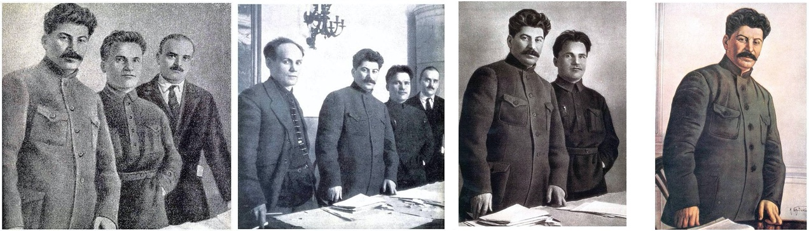

Deep fakes. Addictive technology. Data breaches. New technology and its (mis)use in the past decade seems to have resulted in a crisis of trust in institutions, and in truth itself.

National archives are not immune to a climate of distrust in institutions – and yet, being trusted to preserve the history of a country without tampering with it, is their raison d’être. The National Archives of UK alone holds over 120 miles of papers and documents, from the Domesday book to recent UK government cabinet meeting minutes.
02/2019 - 06/2019

Lead User researcher at Open Data Institute’s ARCHANGEL project [CONTRACT]
High level tasks involved:
- Executing a qualitative study
- Managing various stakeholders
- Developing a research plan(including Research questions, data collection methodology and research script/guide)
- Screening/Recruiting participants
- Synthesizing the data
- Reporting and presenting findings to the stakeholders
PROBLEM
Increasing shift from physical records to the preservation of easily manipulated digital records, sometimes kept in the dark for decades before release, has put unique challenges of guaranteeing integrity of the digital records.
Further these Digital records – that are transient, easy to copy and modify, and prone to corruption in copy and storage – often need to be ported from one format to another, as technology evolves and software used to read certain formats stops being available, their role is rapidly changing and pose existential challenges for archives and memory institutions (AMIs).
AIM
ARCHANGEL, a project formed with members from the University of Surrey (Centre for Vision, Speech and Signal Processing), the UK’s National Archives, and the Open Data Institute (ODI) explores solution to address challenges around trust, integrity and authenticity that preserving born-digital material presents through the possibilities offered by distributed ledger technology (commonly known as blockchain) and machine learning.
Over 2 years, the team worked on the creation of a prototype system based on blockchain and ML technologies to establish the technical feasibility.
However, there was a need to understand the prototype beyond technical feasibility to gather insights on whether external digital preservation practitioners would: understand what the prototype did; see value in the methodology; and have an interest beyond a simple prototype etc.
I led this user study to help us get one step closer to understanding the user adoption and gather insights on the concept and its prototype.

Figure 2: An Archival record that's been access closed for 100 years
UNDERSTANDING THE PROJECT
Challenge 1: Tight deadlines // Technical project
I joined the project at its last phase when the memory institutions were setting up the prototype system in parallel with their routine archival process for a limited period of time. As a technical project and members of all the national archives being highly technical, it was important for me to get a deep understanding of the concept, prototype, archival jargons, and about blockchain and specific Machine learning theories/temporal hashing etc.
My academic background in the technical field helped me quickly pick up the concepts and jargons in a short time, it later helped me in engaging with the participants in an organic way, frame contextual questions and provide a much more detailed result/findings.
DEVELOPING A RESEARCH PLAN
Challenge 2: Multiple stakeholder // Managing expectations
At the outset of the project we didn’t have a clear idea on the research questions/hypothesis as various stakeholders involved had different suggestions on what they wanted to know from the study. As the concept was still in an exploratory/discovery phase some suggested to gather more insights on the concept and if it is a viable idea; some wanted to focus on getting critiques on the prototype/setup & usability; and some wanted to understand the users and their habits to get new ideas.
Therefore, to demonstrate the potential for innovation I proposed a comprehensive study that covered viability, desirability, feasibility and usability aspects of the prototype, inspired by Ideo's design thinking concept "The Sweet Spot for Innovation".
Some of the research questions that have driven the investigations are addressed below:
- Business proposition/Address user pain points:
Does the prototype tackles the key pain-points/needs of the archivist and provides value to the customers (National Archives)? - User engagement:
How does the user engage with the prototype, whether the prototype appeals to the users? And does it support or conflicts with their usual mental model? - Knowhow of Underlying technologies (distributed ledger technologies - Blockchain, hashing and computer vision)
Did the archivists understand the underlying technology of ARCHANGEL ? Would that understanding matter in order for them to have trust in the system and, importantly, to see it as an improvement on existing processes and structures? - Deployment:
How feasible is the system's set-up Experience? Is the prototype easy to deploy with limited resources?
PARTICIPANTS RECRUITMENT
Challenge 3: Organisational hierarchy // Sensitive Communication
Once we decided the research questions, it was challenging to recruit the right users as the National Archives are government organisations with hierarchical roles. We were dealing with sensitive data and were involved with the senior management and head of departments.
For instance the prototype will be used by an archivist, its viability would be accessed by the heads who need to provide compliance and regulation approval and would be implemented by the IT dept., who needs to send a technical audit to the management heads.
Therefore, with the help of our partners, National archives UK, I decided to understand the management of each organisation. This later helped in shaping the data collection methodology.
As a formative research, where I would not just evaluate a prototype but gather insights and access viability, I chose Maximum phenomena variation sampling (3-8 participants), it ensures that the full range and extent of the phenomena are represented and is suitable for small sample size keeping a focus on the detailed richness of participants' experience.
Out of 8 institutions that showed initial interest in the study, five of them were ready i.e. The National Archives (UK), National Archives of Australia, The National Archives of Norway, The National Archives and Records Administration, The National Archives of Estonia. Based on the sampling method used this was more than minimum.
DATA COLLECTION
Challenge 4: Remote distributed teams // Multiple time zones // Firewalls
The participants were spread across the country with multiple time zones. The data collection methodology should be well suited to the participants who were time constrained and compliance & data sensitive.
Furthermore, the participants were not inclined to monetary incentives, therefore, it was significant to know their motivations, which was to contribute to the success of the study. This was beneficial for the study as it means there will be minimum bias.
As there were four aspects to this study namely viability, desirability, feasibility and usability, there were specific data collection techniques for each one of them. Thorough review of various research work was done as well as specific cases were considered to come to the following methodologies outlined in the table below:
| Type | Description | Data Collection |
|---|---|---|
| Viability | Viability measures the system’s likelihood of offering the value while fitting into time and budget constraints. In ARCHANGEL’s context, the study addresses if the prototype aligns to user needs/values with the potential payoff in terms of desired outcomes—whether they were monetary or some other quantifiable measure. | Semi-structured interview. |
| Desirability | Desirable captures aspects of, ‘Worth having or seeking, as by being useful, advantageous, or pleasing’ | The Desirability Toolkit method |
| Feasibility | Feasibility measures the effectiveness of implementing and running the prototype. In ARCHANGEL’s context, the study focuses on the set-up experience and understanding their confidence in setting up the prototype. | A survey that would include a confidence test through Likert-scale questions |
| Usability | Usability measures how easy the prototype is to be used by the users. | Think-aloud method followed by post-observation semi-structured questions. |
The above data collection methodologies were combined into two phases as follows :
- Remote video/audio session: This was a 30 minutes session that comprised of the following:
- Think Aloud testing: Participants were asked to go through the prototype with a use-case while encouraging to think out loud as they are performing a task.
Users are asked to say whatever they are looking at, thinking, doing, and feeling at each moment. This method is especially helpful for determining users' expectations and identifying what aspects of a system are confusing.
Hence used to focus on the Usability aspect of the study. Although the study was mainly concerned with understanding deeper aspects such as viability, feasibility and desirability of ARCHANGEL, usability data collection techniques were first introduced to the participants, as it was an accessible way to make the participants feel comfortable with the system and the settings. - Semi-structured interview: A list of follow-up open-ended questions were asked to elaborate the Usability issues that were identified in the think-aloud testing while slowly transitioning into the deeper aspects of the study i.e. viability and feasibility of ARCHANGEL.
- Survey: A follow-up survey was sent to address the Desirability and feasibility aspect of the study. The Desirability Toolkit method, developed by Joey Benedek and Trish Miner of Microsoft, was used. In their paper “Measuring Desirability: New Methods for Evaluating Desirability in a Usability Lab Setting” they mention how a set of adjectives research participants could use to describe their reactions to a user interface. Due to the remote nature of the study we modified the method to meet our needs by using a survey while probing participants’ rationales for why they chose certain adjectives to uncover additional insights.
Also, improvisations were made where necessary with least biases such as due to firewall it was impossible to use a third-party app such as User Zoom for UX insights this was overcome by using a Zoom + Quicktime + Notes.
Data Analysis
An exploratory data analysis process was used to induce emerging theories from the data to get insights into the research question about how technology could be used to help carers. Therefore, the coding technique used was a thematic analysis.
The data was analysed following the six phases (see Figure 1) of thematic analysis for a reliable and systematic approach to data analysis. NVIVO3 [1] and paper/pen/highlighter were used as the data analysis tool.
The six stages thematic analysis used in the study:STAGE 1
Audio recordings were transcribed verbatim and were cross-checked multiple times for any errors.
STAGE 2
The transcripts were read thoroughly multiple times until the researcher was familiarised and gained a basic understanding of the data prior to coding.
STAGE 3

STAGE 4
STAGE 5
STAGE 6
The themes were analysed continuously and refined by removing, combining or finding new categories. This was done several times until comprehensive and well-defined themes were formed.The results from the thematic data analysis of semi-structured interviews and diary studies presented us with nine themes:
- Problems with formal carers;
- Social circle of caring;
- Importance of information;
- IC uses different communication tools for different purpose;
- Coordination tools used by IC are mostly low-tech;
- Caring is emotional;
- Reassurance of the loved ones health;
- Strategies to overcome barriers; and
- Technological adaptation problem.
Solution
The study was significant as it revealed the essential needs of informal carers that can be used to design future technologies to cater their needs. Following are the key findings:
- The findings clearly revealed that formal carer was a necessity for IC to reduce their burden during the advanced stages of long-term conditions. However, there were frustrations over formal care due to problems such as ill-management and persistence. These problems need immediate action, as they will negatively affect the conditions of both the IC and the elderly person. ;
- The literature and findings revealed that the technology was mostly developed independently of the context. For example, the failure of an alert button in an emergency situation when the elderly person could not react to press the button in sudden outbreak inside the home setting
- One size does not fit all: The findings also reports the different social circle of caring. Consequently, different groups of informal carers had different barriers, problems, needs, frustrations and strategies. Understanding each distinct circle of informal carers needs to be taken into consideration while designing technology. For example, in the findings it shows primary informal carers are usually confined to low-tech strategies to carry out their caring activities;
- Complex structure of caring and technology;
- Importance of information and need for an integrated solution in caring for elderly: The findings show that there was an information crisis in terms of lack of information or information overload. It shows how the informal carers struggle to find the right information at the right time.;
Considering the various factors such as trust, context, ease of use, access to information, security and safety of both informal carer and the elderly people, Blockchain based integrated care management platform was proposed as a potential design approach with the elderly person being in the centre (see Figure).

Next Steps
Microsoft UK in collaboration with its academic and government partners produced a report “UK Future Care” (part of now known as Healthcare Next Project) to address urgent requirements in the UK’s social care sector. The study was instrumental in laying down the foundation architecture to support the instrumentation of accessible homes that will lead to actionable insights to tackle key issues in social caring. It further suggested a paradigm shift in the health sector towards individual and self-care, prevention and user empowerment, so that people can remain independent in and around their own homes and within residential care homes.
Press: Microsoft is trying to ease the UK’s social care problem by using technologyPublication